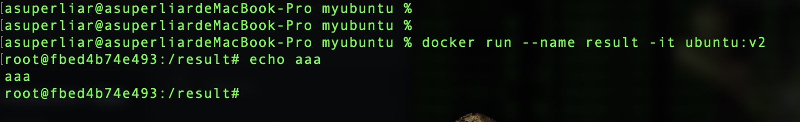
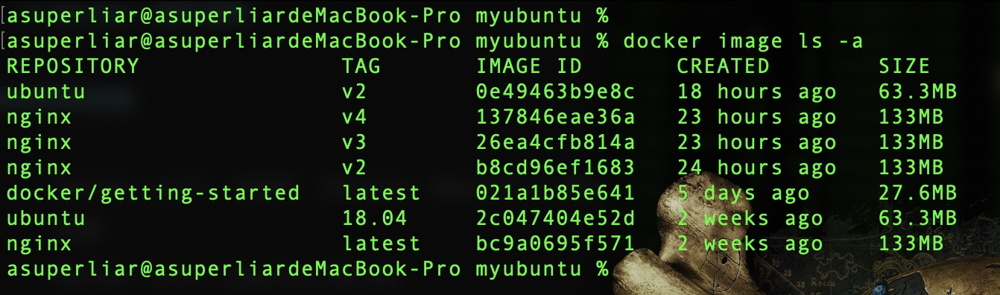
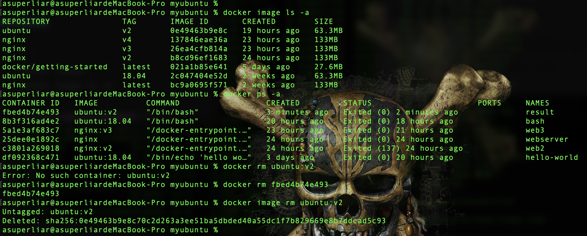
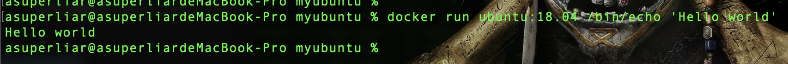
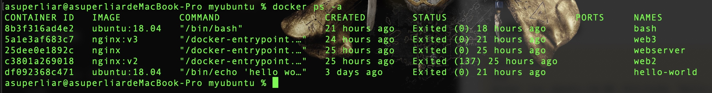
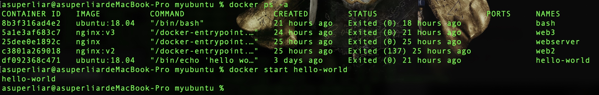
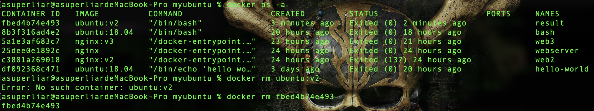

Docker 操作指北
镜像操作
获取镜像
1
2
3docker pull [选项] [Docker Registry 地址[:端口号]/]仓库名[:标签]
示例
docker pull ubuntu:18.04以该镜像作为基础启动，运行容器
1
2
3docker run [OPTIONS] IMAGE [COMMAND] [ARG...]
示例
docker run --name -it ubuntu:18.04
- 查看镜像
1 | docker images |

- 删除镜像
1 | docker image rm [选项] <镜像1> [<镜像2> ...] |

- 使用Dockerfile定制镜像
1 | docker build [选项] <上下文路径/URL/-> |
详细说明https://yeasy.gitbook.io/docker_practice/image/build
命令详解https://www.runoob.com/docker/docker-image-usage.html
容器操作
- 新建并启动容器
1 | docker run |

查看容器
1
2
3docker ps [OPTIONS]
示例
docker ps -a
容器生命周期管理
1
2
3
4
5docker start [OPTIONS] CONTAINER [CONTAINER...]
docker stop [OPTIONS] CONTAINER [CONTAINER...]
docker restart [OPTIONS] CONTAINER [CONTAINER...]
示例
docker start hello-world
删除容器
1
2
3docker rm [OPTIONS] CONTAINER [CONTAINER...]
示例
docker rm id
命令详解https://www.runoob.com/docker/docker-command-manual.html